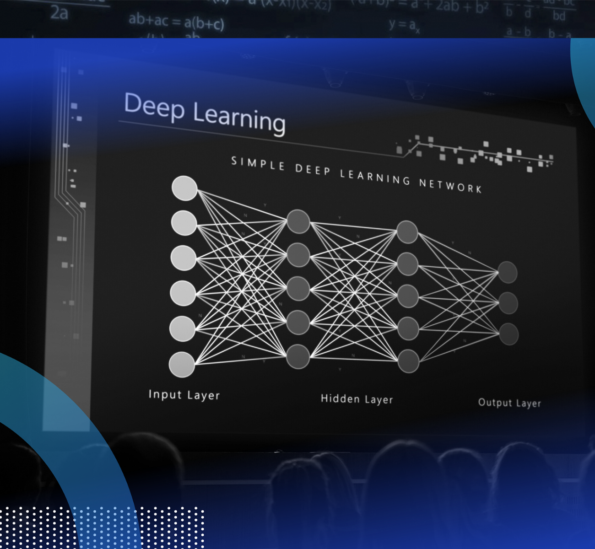

PAGINA DE CARLA MAYOLI CATARI CALDERON


Machine learning. La capacidad de aprendizaje y de predicción de las máquinas se ha incrementado a lo largo del tiempo. Esto se observa tanto en los asistentes virtuales, que cada vez son más eficientes al responder y ejecutar tareas gracias a la mejora de los grandes modelos de lenguaje (LLM), como en plataformas de 'streaming' o comercio electrónico, que utilizan algoritmos para personalizar contenidos. El 'machine learning', especializado en el reconocimiento de patrones, es un campo en auge con décadas de historia.
.accordion-body
Deep Learning Aprendizaje profundo es un conjunto de algoritmos de aprendizaje automático que intenta modelar abstracciones de alto nivel en datos usando arquitecturas computacionales que admiten transformaciones no lineales múltiples e iterativas de datos expresados en forma matricial o tensorial. El aprendizaje profundo es parte de un conjunto más amplio de métodos de aprendizaje automático basados en asimilar representaciones de datos. Una observación (por ejemplo, una imagen) puede ser representada en algunas formas (por ejemplo: un vector de píxeles), pero algunas representaciones hacen más fácil aprender tareas de interés (por ejemplo, "¿es esta imagen una cara humana?") sobre la base de ejemplos, y la investigación en este área intenta definir qué representaciones son mejores y cómo crear modelos para reconocer estas representaciones.
NLP El procesamiento de lenguaje natural (NLP) es una tecnología de machine learning que brinda a las computadoras la capacidad de interpretar, manipular y comprender el lenguaje humano. Hoy en día, las organizaciones tienen grandes volúmenes de datos de voz y texto de varios canales de comunicación, como correos electrónicos, mensajes de texto, fuentes de noticias en redes sociales, vídeo, audio y más. Utilizan software de NLP para procesar de forma automática estos datos, analizan la intención o el sentimiento del mensaje y responden en tiempo real a la comunicación humana.
AG Los algoritmos genéticos (AG) funcionan entre el conjunto de soluciones de un problema llamado fenotipo, y el conjunto de individuos de una población natural, codificando la información de cada solución en una cadena, generalmente binaria, llamada cromosoma. Los símbolos que forman la cadena son llamados genes. Cuando la representación de los cromosomas se hace con cadenas de dígitos binarios se le conoce como genotipo. Los cromosomas evolucionan a través de iteraciones, llamadas generaciones. En cada generación, los cromosomas son evaluados usando alguna medida de aptitud. Las siguientes generaciones (nuevos cromosomas), son generadas aplicando los operadores genéticos repetidamente, siendo estos los operadores de selección, cruzamiento, mutación y reemplazo.

INTELIGENCIA ARTIFICIAL
La inteligencia artificial (IA) es un campo de la informática que se enfoca en crear sistemas que puedan realizar tareas que normalmente requieren inteligencia humana, como el aprendizaje, el razonamiento y la percepción. Estos sistemas pueden percibir su entorno, razonar sobre el conocimiento, procesar la información derivada de los datos y tomar decisiones para lograr un objetivo dado.
Loading...
Loading...